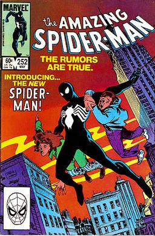

Spider is a superhero appearing in American comic books published by Marvel Comics. Created by writer-editor Stan Lee and artist Steve Ditko, he first appeared in the anthology comic book Amazing Fantasy #15 (august 1962) in the Silver age of comic book.He has been featured in comic books, television shows , films, video games,novels,plays.
In 1962 , with the success of the Fantastic four,Marvel Comics editor and head writer Stan Lee was casting for a new superhero idea. He said the idea for Spider-Man arose from a surge in teenage demand for comic books and the desire to create a character with whom teens could identify . As with Fantastic four,Lee saw Spider-Man as an opportunity to "get out of the system" what he felt was missing in comic books.In his autobiography, Lee cities the non-superman pulp magazine crime fighter the Spider as a great influence ,and in a multitude of print and video interviews, Lee stated he was further inspired by seeing a spider climb up a wall-adding in his autobiography that he has told that story so often he has become unsure of whether or not this is true.
